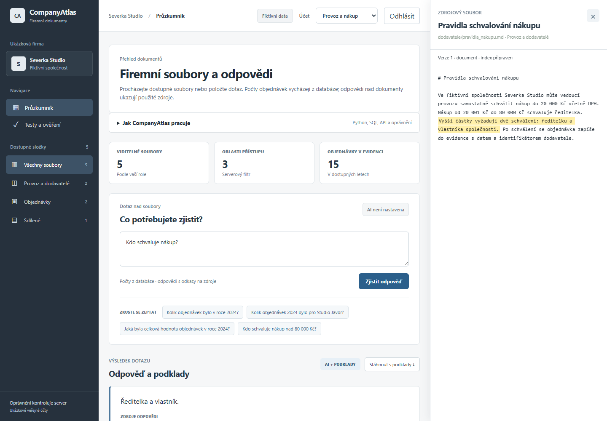
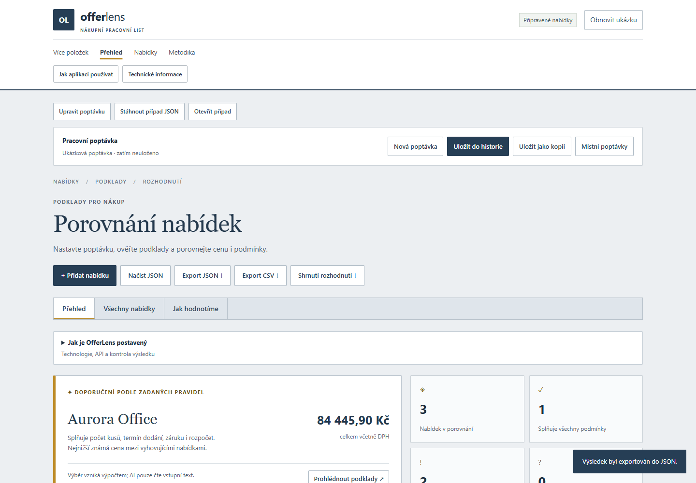
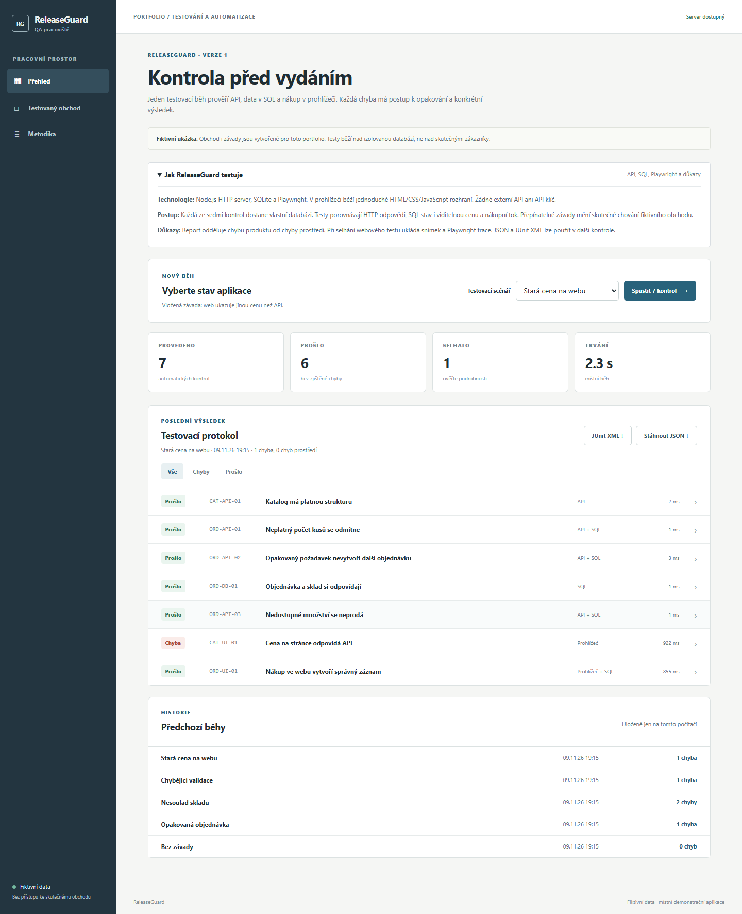
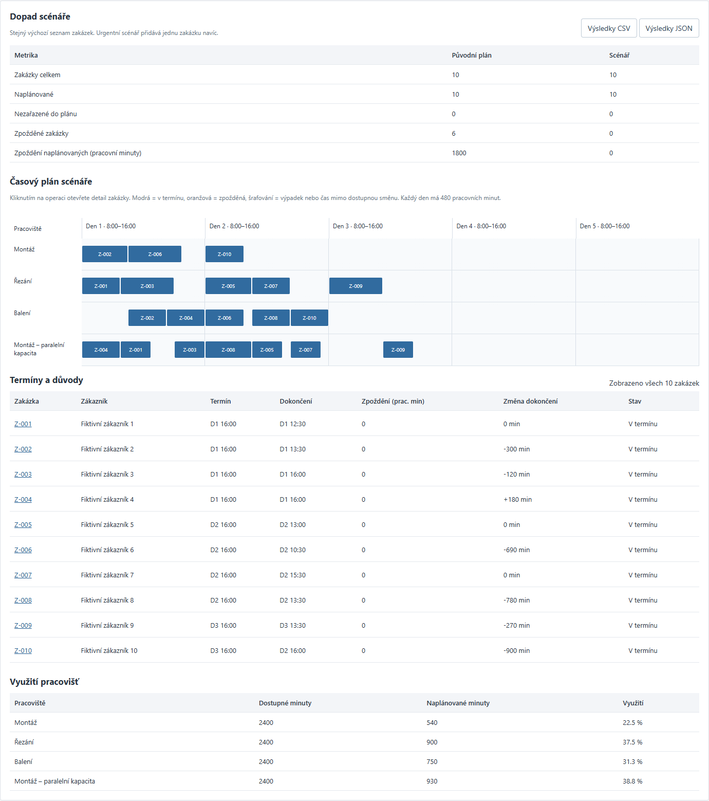
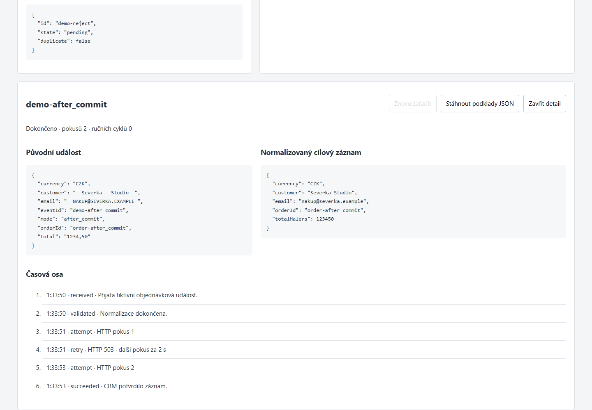

← Živý DataDesk Od podkladu k ověřenému výsledku Portfolio Ondřeje Kroba · fiktivní pracovní data
Zaznamenané ukázky serverových projektů Následují statické snímky z ověřování, nikoli právě běžící aplikace. Kliknutí nespustí AI, plánovač ani testy. Repozitáře obsahují návod ke spuštění, zdrojový kód, testy a jejich omezení. Snímky byly pořízené na fiktivních datech.
CompanyAtlas Přihlášení → povolené zdroje → SQL nebo textová odpověď → citace.

27 Python testů, 50 offline případů a dva širší živé běhy 17/17. PDF/DOCX import, verze a odebrání účtu. Veřejná demo hesla nechrání skutečná data.
Zdrojový kód, postup spuštění a ověření → OfferLens Poptávka → zdroj → kontrola položek a dopravy → porovnání.

34 Node testů a dva živé 12případové běhy extrakce (71/74, 73/74 polí). Není to obecná přesnost AI. Vícepoložkový režim se vyplňuje a ověřuje ručně.
Zdrojový kód, postup spuštění a ověření → ReleaseGuard Vadná ukázková prodejna → testy → závada a důkaz → report.

9 Node testů a browser matice závad; výsledky živého spuštění vyžadují místní server a Playwright. Zde se žádný test nespouští.
Zdrojový kód, postup spuštění a ověření → PlanBoard Zakázky → kapacity → plán → dopad výpadku → nezávislá kontrola.

16 Python testů a browser QA. Deterministická heuristika s kontrolorem, nikoli důkaz globálně optimálního plánu.
Zdrojový kód, postup spuštění a ověření → FlowBridge Objednávkový webhook → trvalá fronta → HTTP do testovacího CRM → opakování bez druhého zápisu.

Statický záznam, nikoli živé odesílání. 13 Python testů, souběh, obnova po restartu a prohlížečový průchod. CRM je místní testovací služba.
Zdrojový kód a spuštění → Stav 10. 11. 2026 · Výsledky konkrétních testů nejsou příslib bezchybnosti pro všechny vstupy.